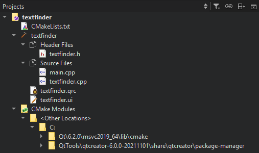

Projects
The Projects view displays projects in a project tree. The project tree contains a list of all projects open in the current session. For each project, the tree visualizes the build system structure of the project and lists all files that are part of the project.

You can use the project tree in the following ways:
- To open files that belong to a project, double-click them in the project tree. Files open in the appropriate editor, according to the file type. For example, code source files open in the code editor. Use the mode selector to open the current file in another editor.
- To bring up a context menu containing the actions most commonly needed, right-click an item in the project tree. For example, through the menu of the project root directory you can, among other actions, run and close the project.
- To see the absolute path of a file, move the mouse pointer over the file name.
- To move files from one project to another, drag-and-drop them in the project tree. Qt Creator makes the necessary changes to project configuration files.
Projects View Context Menu
The Projects view contains context menus for managing projects, subprojects, folders, and files. The following functions are available for managing projects and subprojects:
- Set a project as the active project.
- Execute the Build menu commands.
- Create new files. For more information, see Adding Files to Projects.
- Rename or remove existing files. If you change the base name of a file, Qt Creator displays a list of other files with the same base name and offers to rename them as well.
- Remove existing directories from generic projects.
- Add existing files and directories.
- Add libraries. For more information, see Adding Libraries to Projects.
- Add and remove subprojects.
- Search from the selected directory.
- Open a terminal window in the project directory. To specify the terminal to use on Linux and macOS, select Tools > Options > Environment > System.
- Open a terminal window in the project directory that is configured for building or running the project.
- Expand or collapse the tree view to show or hide all files and folders.
- Close all files in a project.
- Close the selected project or all projects except the selected one. By default, all files in the projects are also closed. To keep them open, deselect the Tools > Options > Build & Run > General > Close source files along with project check box.
For managing files and directories, the same functions are available as in the File System view. To view a project in it, select Show in File System View.
Projects View Toolbar
The toolbar in the Projects view contains additional options.
To filter view contents, select  (Filter Tree):
(Filter Tree):
- Simplify Tree hides the categories and sorts project files alphabetically.
- Hide Generated Files hides the source files that are automatically generated by the build system.
- Hide Disabled Files hides the source files that are not enabled for the current target,
- Hide Empty Directories hides directories that do not contain any files.
- Show Source and Header Groups shows source and header files grouped together in the view, regardless of their location in the file system.
To stop synchronizing the position in the project tree with the file currently opened in the editor, deselect  (Synchronize with Editor).
(Synchronize with Editor).
Some build systems support adding and removing files to a project in Qt Creator (currently qmake and Qbs). The faithful display of the project structure allows to specify exactly where a new file should be placed in the build system.
If the project is under version control, information from the version control system might be displayed in brackets after the project name. This is currently implemented for Git (the branch name or a tag is displayed) and ClearCase (the view name is displayed).